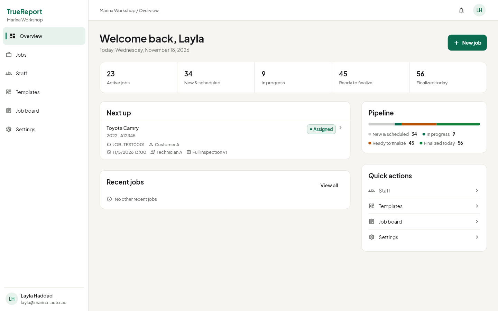
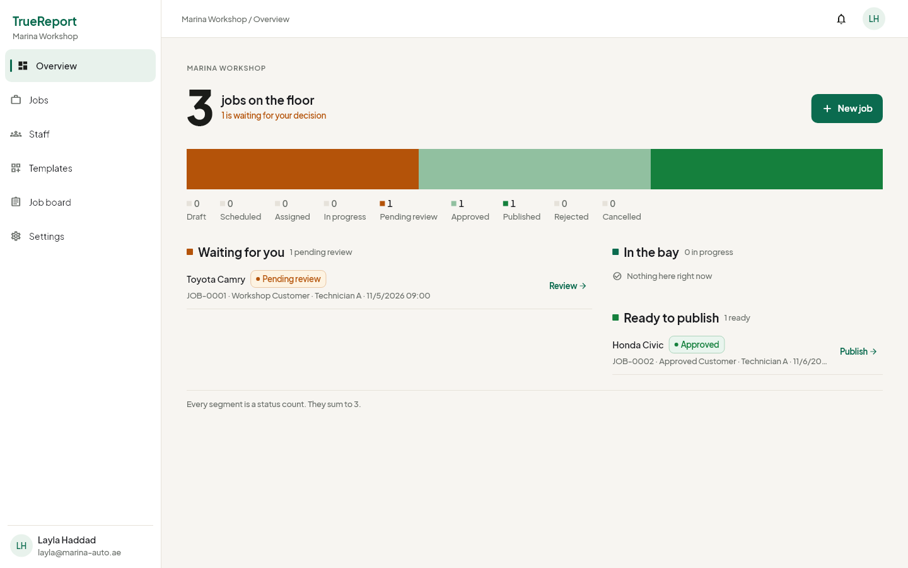
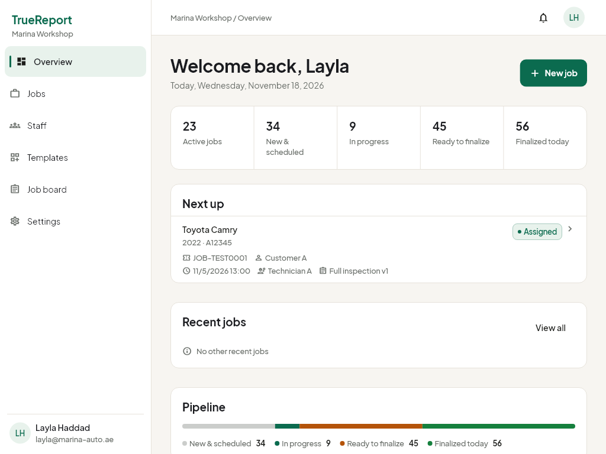
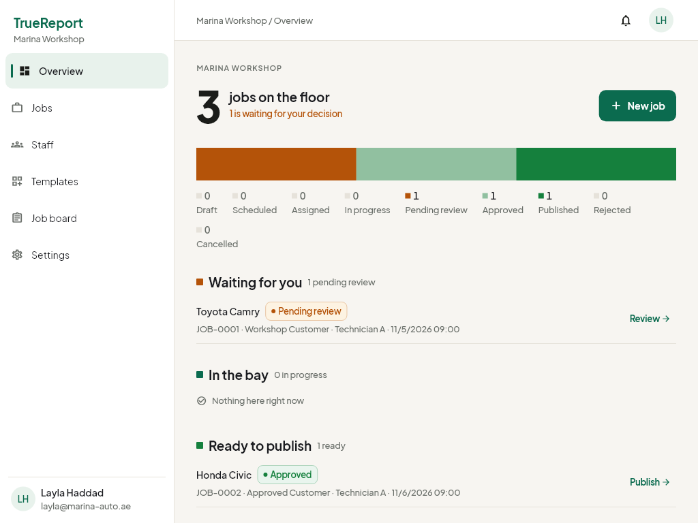
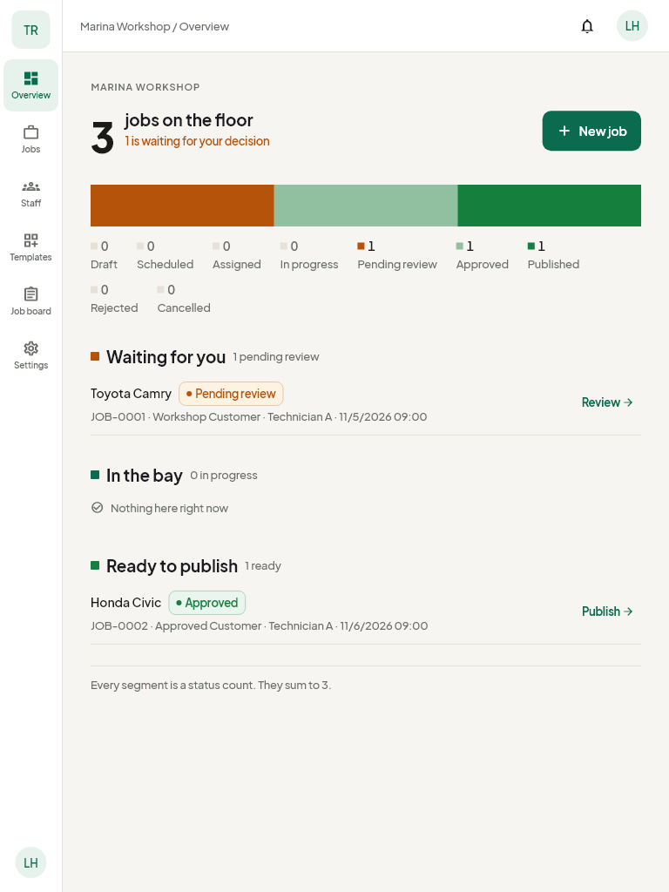
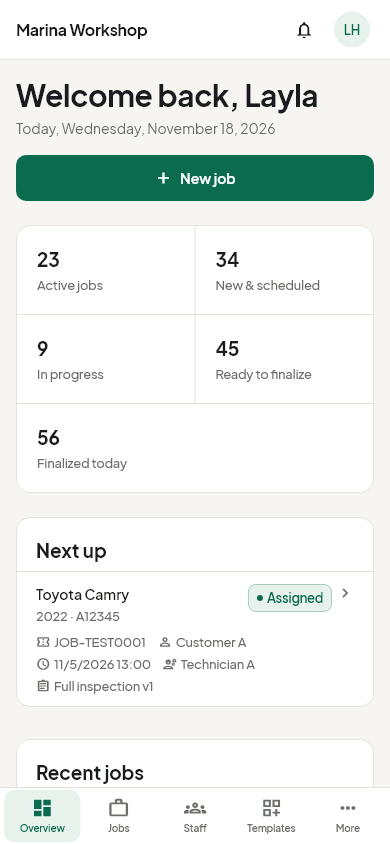
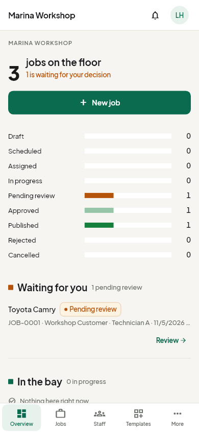
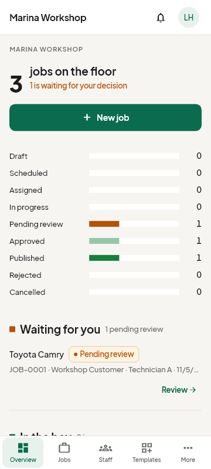
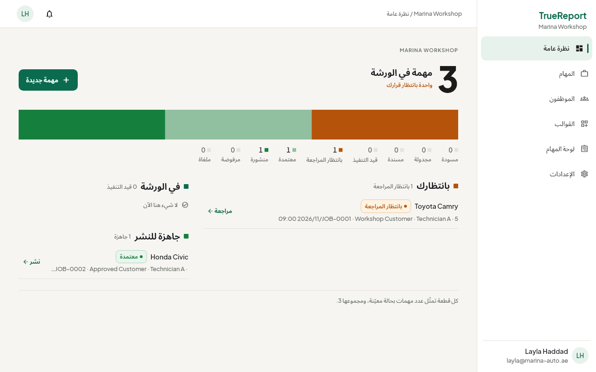

Left: the screen before this wave (committed at HEAD).
Right: the rebuilt screen. Same data contract, a different composition. The old
page was a greeting, a five-tile strip, a Next-up card, a Pipeline card, a
Recent-jobs card and a Quick-actions card; all six are deleted (kill list in
docs/visual_language_dashboard.md §8).
1440

Before

After
1024

Before

After
768

After — rail chrome, atlas + wrapped legend, stacked groups (no pre-wave pair was committed at this width)
390

Before

After
360

After — smallest supported width
Arabic 1280

After — RTL, mirrored partition, numeral pinned LTR
Structural diff, not a repaint
1440: four equal cards → hero + full-width 9-segment partition + a legend that
sizes to its content + three status groups. 1024: 2-column card grid →
single-column groups with a horizontal atlas. 768: rail chrome, wrapped legend,
stacked groups. 390/360: five stacked cards with a stranded fifth tile →
numeral hero, full-width primary action, vertical nine-row spine, stacked groups.
The screen file is rewritten, six files are new, and every old private widget is
deleted.